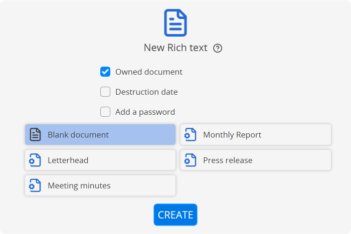
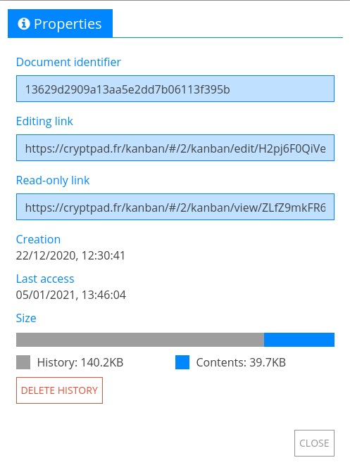

一般#
新しいドキュメント#
新しいドキュメントは以下の方法で作成できます。
CryptPad上で
Ctrl+eを入力。CryptDriveからは、
ツールバーの 新規。
ファイル一覧またはグリッドの下にある新規。
ドキュメントから： ファイル > 新規。

ログイン済ユーザー
作成画面では、新規ドキュメントの作成時に多くのオプションが表示されます。
所有するドキュメント：所有者として新しいドキュメントを作成。所有者を設定せずドキュメントを作成した場合、この設定は変更できません。
有効期限を指定したドキュメント：ドキュメントを破棄する日付を指定。ドキュメントの作成後にこの設定を変更することはできません。
テンプレート：空のドキュメントかテンプレートを選択して開始。
注釈
作成画面には、CryptDrive、または、あなたが属するチームに保存されている全てのテンプレートが表示されます。ドキュメントは、以下の方法でテンプレートとして保存できます。
ドキュメントから、 ファイル > テンプレートとして保存。
または
CryptDriveから、ドキュメントを テンプレートフォルダーにドラッグ。
保存#
ドキュメントに加えられる変更は自動的に保存されます。ドキュメントのツールバー（タイトルの下）にあるステータスの欄から、変更が保存されたことを確認できます。
コピーの作成#
ドキュメントは以下の方法で複製できます。
ドキュメントから、 ファイル > コピーを作成。
CryptDriveから、ドキュメントを
右クリック> コピーを作成。
注釈
コピーの作成は、履歴から内容を削除したい場合や履歴を完全に利用できなくしたい場合などに、履歴を消去するために使用できます。
警告
欠点として、コピーを作成した場合、連絡先またはリンクを送信した相手と、ドキュメントを再び共有する必要があります。ご注意ください。
ドキュメントの履歴#

履歴のツールバー#
ドキュメントの履歴が保存され、必要な場合にはこれを復元することができます。ドキュメントの履歴は以下の方法で表示、復元できます。
ファイル > 履歴。
矢印マークで前後に移動できます。
と で各履歴間を移動できます。
と でユーザーの履歴間を移動できます。
と で各セッションの履歴間を移動できます（同じ作者のグループがドキュメントに接続している間）。
復元で表示中のバージョンを復元できます。 閉じるで復元せず履歴を閉じます。
ドキュメントのプロパティーから履歴を削除すると、使用しているストレージ容量を減らすことができます ドキュメントの所有者
注釈
OnlyOfficeと、暗号化を行うCryptPadのリアルタイムの共同作業の統合により、スプレッドシートアプリケーションでは、履歴は少し異なった形で機能します。詳細はスプレッドシートの履歴を確認してください。
バージョンへのリンク
表示されている履歴のバージョンへのリンクは、以下の方法で共有できます。
ツールバーの 共有。
ドキュメントを共有する際と同様に、連絡先、リンク、または埋め込むを選択。
リンクを受け取った人は、選択したバージョンを閲覧モードで表示できます。
警告
あるバージョンへのリンクを共有すると、ドキュメントの全てのバージョンに読み込み専用でアクセスすることが許可されます。
履歴からスナップショットを作成
表示している履歴のバージョンのスナップショットは、以下の方法で作成できます。
ツールバーの ボタン。
ダイアログでは、スナップショットの名前を指定してください。
新規スナップショット
スナップショット#

スナップショットのダイアログ#
スナップショットは、ドキュメントの履歴の特定の地点のことをいいます。簡単に参照できるよう、名前を付けて保存できます。
以下の方法で、ドキュメントの現在の状態のスナップショットを作成できます。
ファイル > スナップショット
ダイアログでは、スナップショットの名前を指定してください。
新規スナップショット
ドキュメントの履歴のバージョンのスナップショットを作成する方法については、上記の履歴からスナップショットを作成を確認してください。
スナップショットは以下の方法で表示、復元できます。
ファイル > スナップショット
ダイアログ上で、一覧からスナップショットを
クリックして 表示をクリックしてください。スナップショットは新しいウィンドウで開きます。
復元または 閉じる
スナップショットは以下の方法で削除できます。
ファイル > スナップショット
ダイアログ上で、一覧にあるスナップショットを
クリックし 削除 。
プロパティー#

プロパティーのメニューには、以下の方法でアクセスできます。
ドキュメントから、 ファイル > プロパティー。
CryptDriveから、ドキュメントを
右クリック> プロパティー 。
利用可能なデータは以下の通りです。
ドキュメントの識別子。何か問題が発生した場合にインスタンスの管理者と共有できます（この識別子でドキュメントの内容が明らかになることはありません）。
編集用のリンクと表示用のリンク（権限に応じて）。
作成日時と最終アクセス日時。
容量。
ドキュメントの容量の内訳では、内容と履歴がそれぞれ占めている割合が表示されます。履歴を削除をクリック、承認してドキュメントの履歴を削除すると、使用しているストレージ容量を減らすことができます。 ドキュメントの所有者
警告
スナップショットはドキュメントの履歴の一部です。ドキュメントのプロパティーから履歴を削除すると、スナップショットも同時に削除されます。
ユーザーとチャット#
ユーザー一覧 と チャットから、同じドキュメントに接続しているユーザーと交流できます。
それらの枠は、以下の方法で表示したり非表示にしたりできます。
ユーザー一覧は から。
チャットは チャットから。